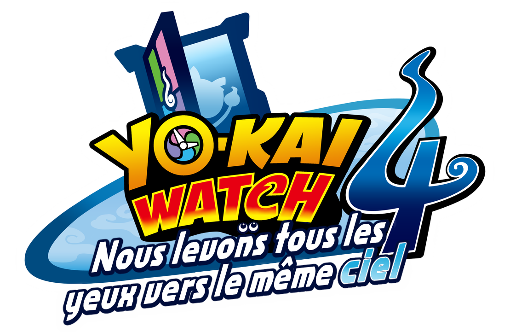
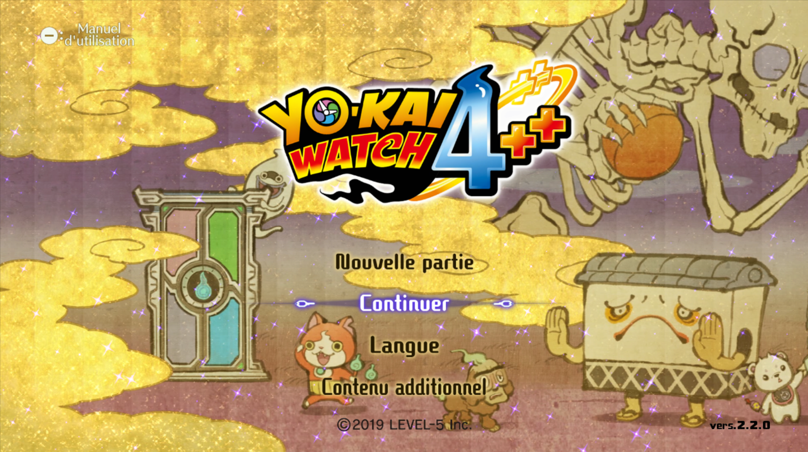
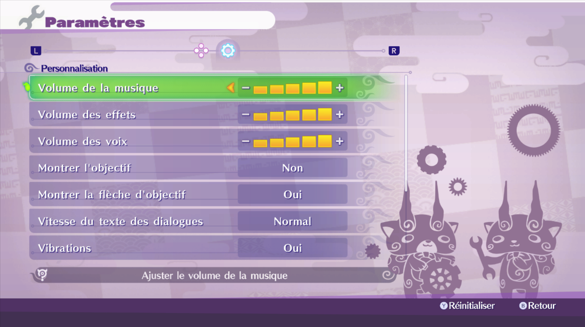
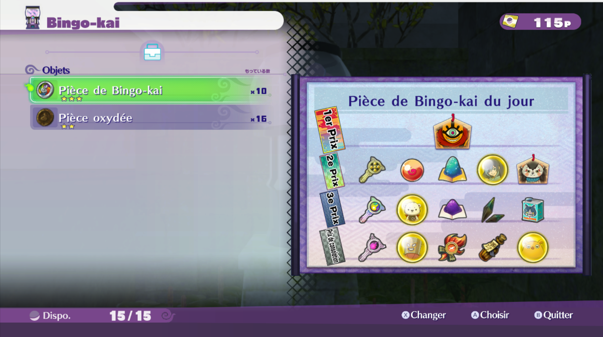
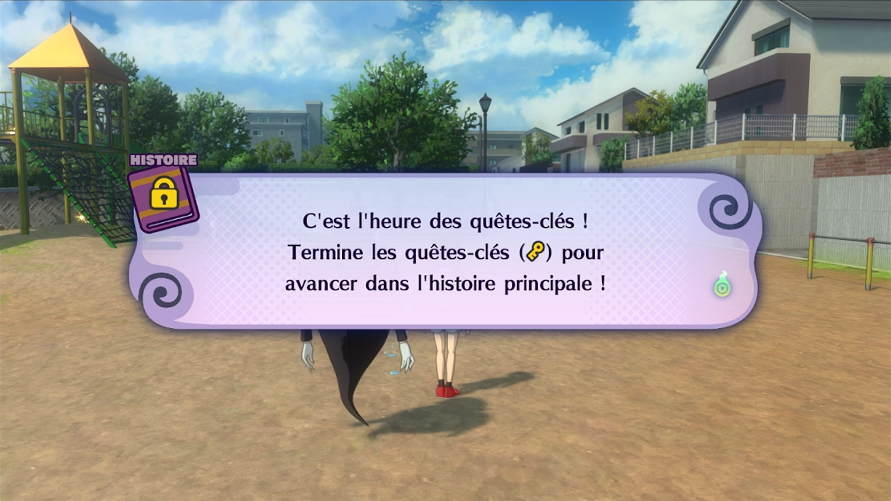
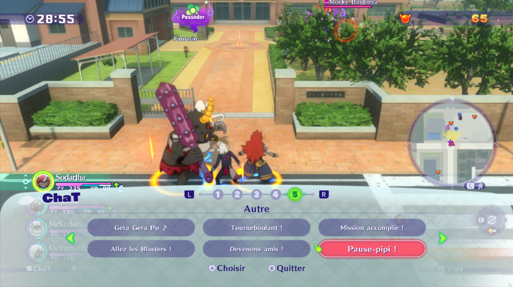
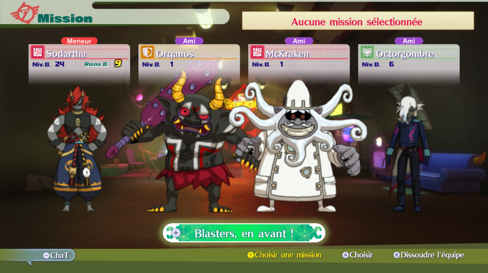

About the project
YO-KAI WATCH 4 is the long-waited 4th game of the YO-KAI WATCH series! It's the game that tried so much things that it made its own fall. Despite all these defaults, it's a game that MUST be released outside Asia, it owns the potential, japanese people weren't happy not because the game is bad, but because they had too many YO-KAI WATCH medias in a short time, that isn't at all the thing we lived internationally and now everyone is yelling just because the series is mentionned. This project is made into the Yo-net Watch translation team, that I belong.
Project members
In this project, you can find guys that make textures like Darkved and and translators like Shinethestar. My role in all of that? Implement, adapt, assist. I have to make sure that this translation is accurate compared to the others of the series, and that people are immersed like before, making sure every single word or pixel are accurate. So obviously, I entirely depend to the others. But we are still searching for translators and texture guys to go faster! If you have translation skills (JP>FR or CH>FR) or you are able to easily edit textures so the text is in french with the exact same font, effects etc., don't hesitate to DM me! Don't forget: start the conversation.
And what about the old translation?
This old translation thing is almost entirely deleted. Since it had too many defaults (that me and the others current members of the team haven't made), we just decided to put it to trash and make a brand new cleaner one.
The progress is available on this website, but isn't always accurate or entirely correct.
Screenshots





